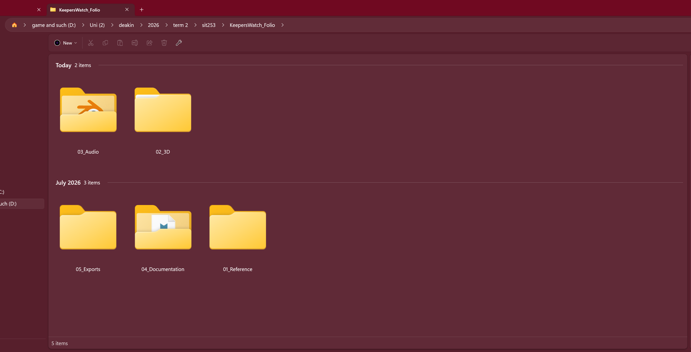
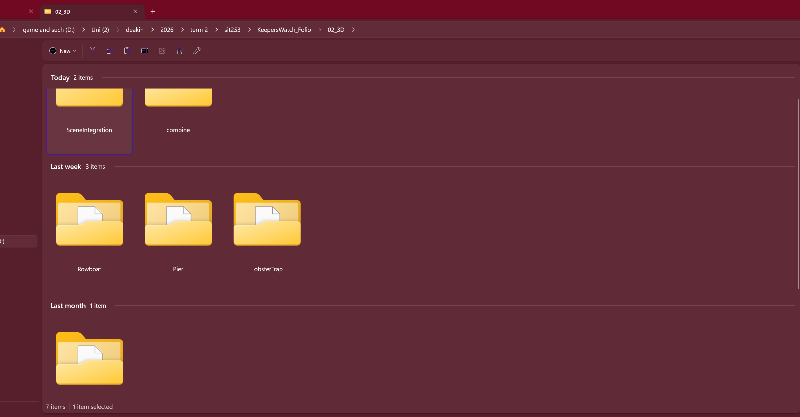
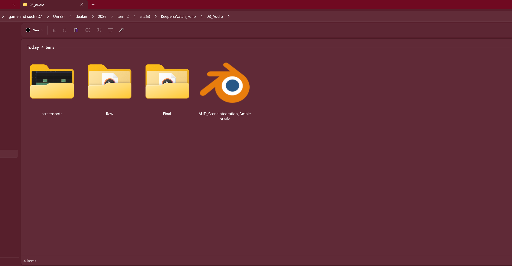

Asset Management System
My local folder structure traces straight back to the rows in the Asset Plan tables, so anyone opening it can find an asset without me walking them through it.
KeepersWatch_Folio/ ├── 01_Reference/ (moodboard exports, research PDFs, citations) ├── 02_3D/ │ ├── LighthouseLamp/ — DONE (modelled + textured, hero asset, live on SketchFab) │ │ ├── LighthouseLamp.blend │ │ ├── LighthouseLamp.blend1 (autosave backup) │ │ ├── LighthouseLamp.glb (exported, SketchFab-ready) │ │ └── screenshots/ (11 dev-process shots: blockout → assembly → textured final) │ ├── LobsterTrap/ — DONE (modelled + textured, real wire-mesh geometry, live on SketchFab) │ │ ├── LobsterTrap.blend │ │ ├── LobsterTrap.blend1 │ │ ├── LobsterTrap.glb │ │ ├── textures/ (baked Driftwood diffuse — see note below on why this exists now) │ │ └── screenshots/ (24 dev-process shots: frame → mesh cage → funnel → UV → materials → export fix) │ ├── Pier/ — DONE (expanded in scope to a full boardwalk, live on SketchFab) │ │ ├── Boardwalk_Pier.blend │ │ ├── Boardwalk_Pier.blend1 │ │ ├── render_hires.py (camera/render automation script — not asset-generating) │ │ └── screenshots/ (23 dev-process shots: deck → substructure → railings → UV → materials → final) │ ├── Rowboat/ — DONE (waterline weathering detail, live on SketchFab) │ │ ├── Rowboat_packed.blend │ │ ├── export/ (Rowboat.glb + baked wood texture) │ │ └── screenshots/ (20 dev-process shots) │ ├── SceneIntegration/ + combine/ — composed scene combining all 4 finished assets │ │ └── combine/photos/ (5 composed-scene screenshots — see Scene Integration page) │ └── SeagullNest/ — cut. Dropped as the stretch 5th asset once the other 4 were confirmed feasible; see Reflection for the reasoning. ├── 03_Audio/ │ ├── Raw/ (11 sourced/recorded raw clips, each logged with licence/source in the asset inventory) │ ├── Final/ (8 edited, folio-ready .wav files + 1 layered ambient mix for Scene Integration) │ └── screenshots/ (editing-process screenshot per finished clip) ├── 04_Documentation/ (asset list, timeline, working docs) └── 05_Exports/ (final render screenshots, glTF/SketchFab bundles)



Raw/ (11 sourced clips), Final/ (8 edited assets + the layered ambient mix), and screenshots/ (editing-process evidence per clip) — all populated.Naming convention: AssetType_AssetName_Version — e.g. 3D_LighthouseLamp_v2.blend, AUD_Foghorn_Ambient_Final.wav. No generic names ("new folder," "stuff," "test"). Every folder/file name traces directly back to a row in the Asset Plan tables.
Update — why textures/ subfolders exist now: the original plan (Folio 2) was that procedural Blender materials wouldn't need a separate textures folder, since the colour data lives inside node graphs in the `.blend` file. That held until export: glTF/SketchFab can't interpret arbitrary shader node graphs, only flat values or actual image textures, so every procedural material had to be baked to a real image file before it would export correctly — first discovered on the Lobster Trap (it exported completely flat white), then hit again on the Pier's three materials and the Rowboat's hull after its waterline-weathering extension was added. Each baked image now lives in that asset's own textures/ or export/ subfolder, following the same naming convention as everything else. This is covered in more technical detail on the 3D Assets page and in the Reflection.
Per-Asset Production Breakdown
Granular stage tracking per asset, since the phase-level table above doesn't show individual production steps.
| Asset | Modelled | UV / Materials | Textured | Refined & finalised |
|---|---|---|---|---|
| Lighthouse Lamp Housing (hero) | Done — Week 6 | Procedural materials, no UV needed | Done — Week 7 | Done — carried forward unchanged from Folio 2, live on SketchFab |
| Lobster Trap | Done — Week 7 | Done — two techniques (Cube Projection for flat parts, Smart UV Project for the ring), 11 Sep | Done — 11 Sep, including the glTF-export bake fix | Done — live on SketchFab, full documentation set |
| Rowboat | Done — 13 Sep | Done — Smart UV Project (hull) + Cube Projection (thwarts/outboard) | Done — waterline-weathering material extension, re-baked 14 Sep | Done — live on SketchFab, verified textures render correctly |
| Pier (scope expanded from a single repeating post to a full boardwalk) | Done — 13 Sep | Done — 3 techniques across one asset (deck/railing via Cube Projection, posts via seam+Unwrap) | Done — 3 materials (WeatheredDeck/Paint/Piling), baked + exported 14 Sep | Done — live on SketchFab. Note: ~162k tris, over the original ~3,000 budget — a deliberate trade-off, see Reflection |
| Seagull Nest (stretch 5th asset) | Cut. Once the other 4 assets were confirmed achievable at high quality, the stretch asset was dropped rather than rushed — see Reflection for the reasoning. | |||
Timeline
| Week | Phase | Planned tasks & targets | Status |
|---|---|---|---|
| Week 3 | Conceptualisation | Lock theme + concept, build visual + sonic moodboard, draft asset list | Done |
| Week 4 (Fri 31 Jul) | Progressive Folio 1 due | Submit documentation, references, moodboards, asset plan, asset mgmt, timeline, reflection | Done |
| Week 5 | Technical planning → Execution | Set up Blender project files per folder structure; begin Lighthouse Lamp Housing (hero asset) | Delayed — started later than planned |
| Week 6 | Execution | Finish Lighthouse Lamp Housing (textured); begin Rowboat modelling | Delayed |
| Week 7 (now, Fri 28 Aug) | Progressive Folio 2 due | Minimum 2 completed/textured 3D assets, updated asset mgmt + timeline, reflection | Lighthouse Lamp Housing: modelled + textured. Lobster Trap: modelled, texture pending. Rowboat not started. |
| Week 8–9 (29 Aug – 10 Sep) | Execution | Texture the Lobster Trap; begin Rowboat + Pier modelling; start sourcing raw audio | Slower than planned — most of this window went to planning/gap analysis for the Final Folio rather than active modelling |
| Thu 11 Sep | Execution | Lobster Trap: UV (both flat-geometry and curved-geometry techniques), procedural materials, glTF export/bake fix, SketchFab live | Done — same day |
| Sat 13 Sep | Execution | Pier scope decision (single post → full boardwalk) and Rowboat, both fully modelled + textured | Done — same day, ahead of even the reduced-scope plan |
| Sun 14 Sep | Execution | Pier (3 materials) and Rowboat (waterline extension) baked, exported, uploaded to SketchFab; eFolio pages updated | Done — all 4 models fully complete |
| Mon 15 Sep | Execution | Audio: sourced 9 remaining raw clips (Freesound, CC0), edited 8 of them same day; Scene Integration scene composed, ambient mix layered, narrative written | Done — audio (8/8) and Scene Integration both closed out same day |
| 16–22 Sep | Execution → Evaluation | Audio gallery page, folder-structure re-screenshot, critical reflection | In progress |
| Week 11 (Thu 24 Sep, 8pm) | Final Folio due | Full eFolio polish, freeze full-site PDF, submit live URL + PDF | On track — all asset-production criteria done well ahead of deadline |
Risk & Plan B
The Lighthouse Lamp Housing did take longer than the original Week 5–6 window — I was still learning box modelling basics, and the gallery railing in particular took a lot more trial and error to get proportioned correctly than I'd expected. It's now modelled and textured, just later than planned.
Folio 2 update: to keep to two assets for that checkpoint, I pulled the Lobster Trap forward from its original Week 8–9 slot instead of starting the Rowboat, since the Trap was scoped as the simpler prop and gave me a faster path to a second asset. In practice it ended up more involved than planned — I modelled the wire-mesh cage and funnel netting as real geometry rather than baking that detail into the texture — so at that checkpoint it was fully modelled but not yet textured.
Final Folio update: two real deviations from the original plan, both deliberate:
- Pier scope expansion. The original plan scoped this as a single ~400-tri repeating post. After working from a reference photo of a full boardwalk pier, I chose to build the full branching structure instead — a real time-cost increase, and the finished asset sits at roughly 162k triangles, well above the original budget. That's a conscious trade-off (visual impact over strict poly discipline for this one prop), not an oversight, and it's discussed further in the Reflection.
- Seagull Nest dropped. This was always the stretch 5th asset in the original plan (§5, Table 1: "gives buffer if one proves too ambitious"). With the other 4 assets finished to a high standard well ahead of the deadline, I chose not to add a 5th asset for its own sake — the time was better spent getting audio and Scene Integration done properly instead.
Neither of these were forced by running out of time — both models and all planned audio assets finished with time to spare before the 24 Sep deadline, which is what made room for the Pier's expanded scope in the first place.